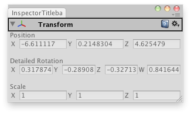

EditorGUILayout.InspectorTitlebar
public static bool InspectorTitlebar(bool foldout,
Object[] targetObjs);
Parameters
| foldout | The foldout state shown with the arrow. | |
| targetObj | The object (for example a component) or objects that the titlebar is for. |
Returns
bool The foldout state selected by the user.
Description 描述
Make an inspector-window-like titlebar.

Create a custom inspector that shows the X,Y,Z,W quaternion components on the rotation.
// Create a custom transform inspector that shows the X,Y,Z,W // quaternion components instead of the rotation angles.
using UnityEditor; using UnityEngine;
public class InspectorTitlebarExample : EditorWindow { bool fold = true; Vector4 rotationComponents; Transform selectedTransform;
[MenuItem("Examples/Inspector Titlebar")] static void Init() { var window = GetWindow(typeof(InspectorTitlebarExample)); window.Show(); }
void OnGUI() { if (Selection.activeGameObject) { selectedTransform = Selection.activeGameObject.transform;
fold = EditorGUILayout.InspectorTitlebar(fold, selectedTransform); if (fold) { selectedTransform.position = EditorGUILayout.Vector3Field("Position", selectedTransform.position); EditorGUILayout.Space(); rotationComponents = EditorGUILayout.Vector4Field("Detailed Rotation", QuaternionToVector4(selectedTransform.localRotation)); EditorGUILayout.Space(); selectedTransform.localScale = EditorGUILayout.Vector3Field("Scale", selectedTransform.localScale); }
selectedTransform.localRotation = ConvertToQuaternion(rotationComponents); EditorGUILayout.Space(); } }
Quaternion ConvertToQuaternion(Vector4 v4) { return new Quaternion(v4.x, v4.y, v4.z, v4.w); }
Vector4 QuaternionToVector4(Quaternion q) { return new Vector4(q.x, q.y, q.z, q.w); }
void OnInspectorUpdate() { this.Repaint(); } }
The titlebar has an arrow for folding out, a help icon, and a settings menu that depends on the type of the object supplied.